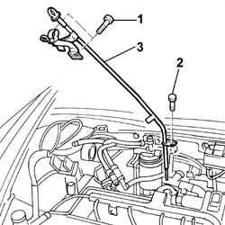

1084A16 Engine oil dip stick PIPE - R.R.
- Path
- Procedures > 10 ENGINE > 1084 ENGINE LUBRICATION > 1084A INDICATORS/CHECK DEVICES > 1084A16 Engine oil dip stick PIPE - R.R.
- Kind
- repair procedure (removal / refitting; the operation number is the code)
- Applies to
- engines: 2.4 JTD 10V; all production periods
- Interactive page
- https://sloeber94.github.io/elrnDB-lThss/en/#/76121
Applies to: all engines; all production periods
 Removing
Removing
 Refitting
RefittingSee in Op. 1016A10
1. Undo the engine oil dipstick pipe upper fixing bolts.
2. Undo the engine oil dipstick pipe lower fixing bolts.
- Open the bands and release the wiring connected to them and release the timing sensor.
3. Remove the engine oil dipstick pipe.

Applies to: all engines; all production periods
Refitting
Removing- Fit the engine oil dipstick pipe.
- Secure the wiring and the timing sensor to the engine oil dipstick pipe.
- Tighten the engine oil dipstick pipe lower fixing bolt to torque.
- Tighten the engine oil dipstick pipe upper fixing bolt to torque.
See in Op. 1016A10